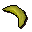

Pirate's Treasure
Scripts in
scripts/quests/quest_hunt/NPCs involved
Items involved

BananaInvolvement is derived from identifiers referenced by the quest scripts.
scripts/quests/quest_hunt/
BananaInvolvement is derived from identifiers referenced by the quest scripts.